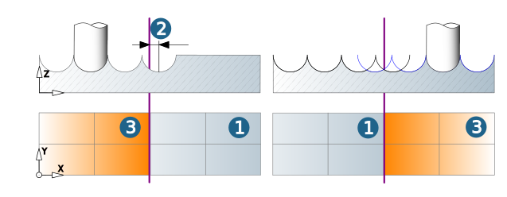

Boundary
Strategy
|
|

Closed curves can be used as boundaries, for example, Polylines (2D/3D), Splines, Circles. The Z position of the boundaries is not taken into account, so that 2D curves are satisfactory. 3D curves are projected into the XY-plane.
One or more boundaries are permissible, and they may overlap for the purpose of area delimitation.
If no boundary is selected, the component's boundaries are used as machining boundaries, taking into consideration any defined allowances, any top/bottom values, and the direction of the defined frame.
The minimum distance between the boundary curve and actual machining area should be the cutter radius and machining allowance.
 |
|
Milling surfaces are used to calculate a boundary automatically.
Depending on the cycle used, the machining can be limited with a manual boundary and/or using stop surfaces.
Boundary curve
If no boundary is defined, the outside contours of the model are used as the machining boundaries. One or more boundaries are permissible, and they may overlap for the purpose of area delimitation; however, they may not be nested several times. The boundary curve (1) is valid for the axis position of the tool.
 |
|
|
Tool reference
During some machining cycle a definition of the traverse area in dependence on the boundary curve is possible. The following options are available, depending on the cycle:
To (1): The milling path ends as soon as there is contact between the tool shank and the boundary. This ensures that already machined surfaces lying outside the boundary are not touched. Machining with exact boundary. This may result in unmachined areas.
On (2): Machining of the defined area until the tool axis is on top of the boundary. The tool axis can never move beyond the boundary.
Offset: Any given offset value can be chosen. A positive value enlarges the boundary, while a negative value reduces it. With nested boundaries, a positive offset value enlarges the outer boundaries and reduces the inner boundaries (vice versa with negative offsets). An offset of 0 corresponds to the On mode.
The offset option is suitable for pre-machining with rough boundary. Here too, unmachined areas may result.
Past (3): The tool axis leaves the boundary. The milling path ends as soon as there is no longer contact between the tool shaft and the boundary. For machining with an exact boundary. Without neighboring surfaces there is a danger of “nose-diving". This is advantageous when machining raised surface areas. Complete machining of border areas. No ‘nose-diving’ of the cutter in the border area for cavities (3).
 |
This is advantageous when machining raised surface areas (1). Complete machining of the border areas takes place.
No ‘nose-diving’ of the cutter in the border area for cavities (2).
 |
Contact: The milling path ends as soon as there is no longer contact between the tool geometry and the surface limited by the boundary. This ensures complete machining of the surface. Depending on the slope angle of the surface, the boundary may be crossed. Without neighboring surfaces there is a danger of “nose-diving".
Stop surfaces
|
Use stop surfaces to define the area of the CAD model on which no machining takes place. Always use stop surfaces whenever you need to ensure that the tool does not touch the stop surfaces. |
Offset: The offset of the stop surfaces extends the area excluded from machining by the specified value. Valid in X, Y and Z direction.
Additional horizontal offset: Extends the area excluded from machining in X, Y direction.
Trim to stock
Trim to stock: Enable to use the stock to trim the toolpaths. A defined Offset value is taken into account.
|
Define a new stock to trim the toolpaths. Select a defined stockmodel from the list. |

Boundary projection
The defined boundary can be projected in any desired direction in order to better limit the area to be machined. Boundary projections can also be used to delimit areas that are difficult to access. The boundary can only be projected when using ball mills and not for the contact tool reference.
User defined projection direction: If this option is enabled, the selected boundary can be projected in a specific direction and therefore limit the machining area.
|
|
Click the icon to define the Projection direction for the selected boundary. Select the geometric element. The values for the projection direction can also be defined manually (X, Y, Z direction). |
|
|
Reverse the projection direction by clicking the icon and selecting the Reverse option. |

Milling surfaces
Use milling surfaces to define the area to be machined.
|
Manual boundaries: The milling surfaces can be delimited with one or more manual boundaries. The boundaries must be located on the milling surfaces. When this strategy is used, the edge behavior of the tool is the same as with On mode with regard to the surface normals on the boundary. |
When machining takes place with the Soft bounding function, (only when using ball mills), the Manual boundary (1) must not be on the Milling surfaces (2). It can be placed anywhere and is projected onto the milling surfaces. Areas are processed in which the point of contact between tool and surface is within the boundary, from the point of view of the frame.
 |
Milling surface mode
Standard: Only available for ball mills. Use the Soft bounding option to control the transition between milling surfaces and stop surfaces.
Extension: Use the Milling surface extension option to protect the edges of the model against rolling movements of the tool. For this purpose, hyperMILL generates extension surfaces that connect to the defined milling surfaces tangentially or in a curvature-constant manner.
Milling surface extension
Automatic: If Extension is selected as the milling surface mode, the function is activated by default. The milling surfaces (1) are then extended by the amount tool radius/2. The extension is displayed in a graphical preview (2).
If another value is required for the Length (3) of the extension surfaces as a result of the model geometry or the surface quality, specify this value directly or using formula definitions. Alternatively, you can also use the manipulator (4) for this.
|
|
Extension surfaces: If you want the extension surfaces to be defined manually, disable the Automatic option and select the required surfaces. |
The following example shows the two Milling surface mode options Standard and Extension.
(1) Standard: Machining with ball mills. Edge ‘rolling’ is performed for the edges of the workpiece (3). If machining in the Standard milling surface mode is limited by a manual boundary, the contact point of the tool must be within the boundary from the frame view.
(2) Extension: Machining with ball mills. The extension surfaces prevent rolling around the edges (3), and so protects them. If machining in the Extension milling surface mode is limited by a manual boundary, the tool center must be within the boundary from the frame view.
Advanced option
Check adjacent faces: Without checking, a milling extension is created around all selected surfaces, also within the model (1). with checking – only on edges and fillets (2). Optionally handle the fillets differently when checking adjacency relations depending on the maximum fillet radius (Max. fillet radius). No surface extension is created if the radius of the fillet is smaller than the entered value (3).
Wider blending: If a chain of boundaries/edges has been selected and there are usable surface extensions before and after a gap, an attempt is made to close the gap using the fill algorithm. If this fill surface is also unusable, further adjacent surface extensions are removed and approximated by the fill algorithm. The warning ‘Some areas have been replaced by an approximation’ appears. Click the warning to highlight the approximated areas in color. To remove the highlighting, click the empty area below the warnings.
Normal direction: Automatically calculate an extension from the direction of the adjacent boundary of the given surfaces. In a solid, it is the common edge with the adjacent solid surface. As this direction can be oblique, the width of the extension is often less than the length entered. Activate this Normal direction option to calculate an extension normal to the selected edge or boundary (1).
Use the Check undercuts option to determine whether a tool’s position direction results in an undercut in the surfaces to be created due to the orientation of the surfaces to be processed.
|
|
Create CAD surfaces: The calculated extension surfaces are generated as CAD surfaces. The surfaces are automatically selected and saved on a separate layer |
Soft bounding
Only available for ball mills.
When the Use all other surfaces option is enabled, machining does not stop when the tool makes contact with the stop surface (1), but when it exceeds the surface by the blending factor (2). This factor is based on the tool radius (standard = 0.05 x tool radius). Permitted values are between 0.02 and 0.2. In this way, full machining of the milling surface (3) is ensured.
Use the Manual selection option to manually select the bounding surfaces and stop surfaces.
|  |
Note
Define all surfaces that connect to the milling surfaces tangentially or that continue vertically downward from their edge as bounding surfaces.
Stop surfaces
|
Use stop surfaces to define the area of the CAD model on which no machining takes place. Always use stop surfaces whenever you need to ensure that the tool does not touch the stop surfaces. |
Use all other surfaces: All (other) surfaces of the component that are not used for milling are automatically defined as stop surfaces excluded from machining.
Manual selection: Manual definition of stop surfaces to be excluded from machining.
Offset: The offset of the stop surfaces extends the area excluded from machining by the specified value. Valid in X, Y and Z direction.